Lista de enlaces: índice, detalles, bocetos, miembros, planificación, contacto
En esta pantalla, los usuarios registrados podrán comprar entradas o ver la entrada si se ha comprado, ver el foro del evento y valorar (si hemos comprado la entrada). Además de una descripción del evento e información relevante como la duración, ubicación y si es solo para adultos.
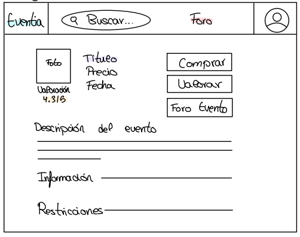Si el usuario ya tiene la entrada, donde pone comprar aparecerá un botón de "Ver mi entrada" y si se pulsa se mostrará un QR con la entrada.
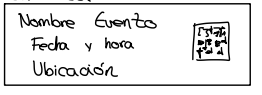En cambio, el administrador y el promotor (solo en sus eventos) se les mostrará de esta manera:
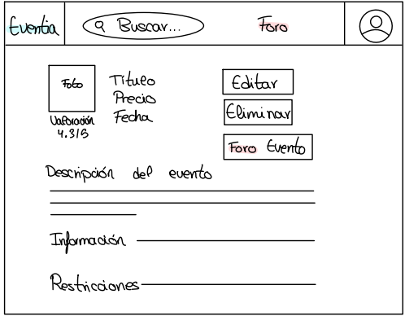
En esta pantalla aparecerán los comentarios de los usuarios y en el inferior de la página
los usuarios registrados podrán enviar sus aportaciones.
Los administradores y los promotores, estos últimos, solo en sus eventos, podrán eliminar cualquier comentario que les parezca inapropiado.
Antes de asistir al evento los usuarios tendrán la posibilidad de ver las opiniones de los demás de cada evento.
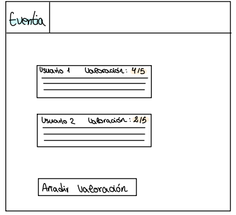Cuando ya hayan asistido al evento, podran valorar. Aquí, les aparecerá una ventana como la siguiente en la se podrá valorar y poner una breve opinión sobre el evento.
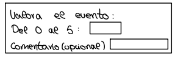Los usuarios registrados al comprar la entrada les aparecerá una ventana como la siguiente en la que tenemos que poner nuestros datos y comprar la entrada. Además, aparecerá la opción de usar puntos y se indicará cuántos se acumularán con la compra. Y la opción de tener un asiento reservado por ser VIP y bebida ilimitada.
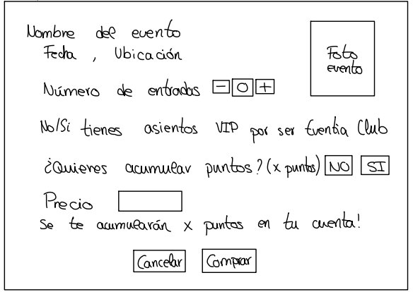En su perfil aparecerá una opción de añadir un nuevo evento y todos los eventos que podrá modificar y eliminar.
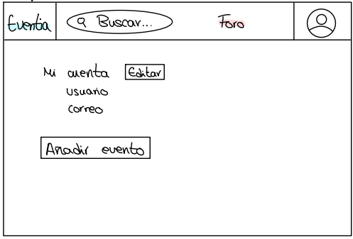La ventana para añadir un nuevo evento es la siguiente:
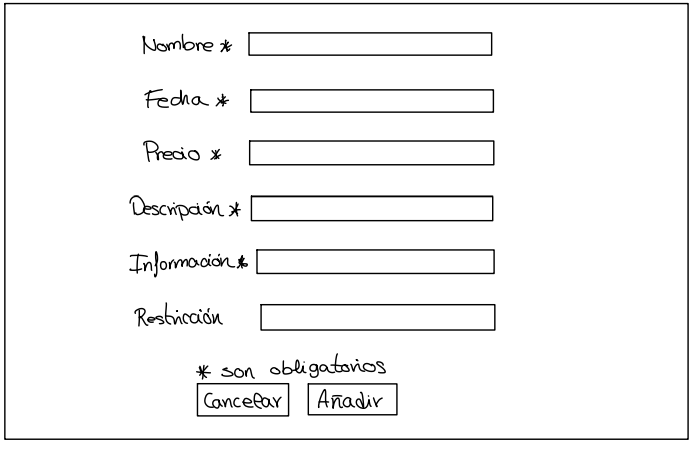La ventana para modificar un nuevo evento es la siguiente:
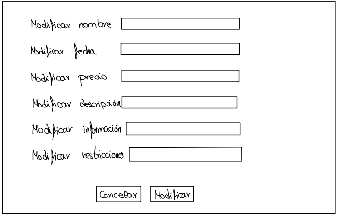Cuando quiera eliminar un evento solo le saldrá la opción de "¿Estás seguro?"
Inicio es la primera página que nos saldrá nada más abrir la web.
En esta página nos aparecerán un enlace a los eventos que hay activos ordenados por categorías.
Saldrá una foto e información relevante de dicho evento como el nombre, la valoración, el precio,...
En la parte superior habrá un botón arriba a la izquierda que será un enlace directo al inicio en todas las pantallas.
También habrá un buscador para encontrar el evento que quieras, un enlace directo al foro general y en la esquina derecha un enlace al perfil.
Cuando se pulsa en el botón de la esquina superior derecha, se mostrarán diferentes opciones según el tipo de usuario.
Le aparecerá la opción de iniciar sesión o registrarse.
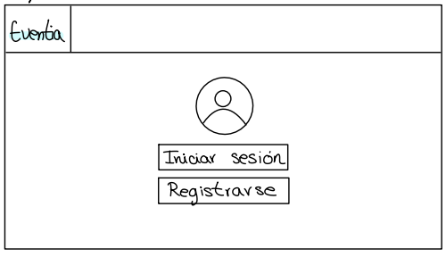Aquí se mostrará una pantalla en la que los usuarios pueden gestionar su cuenta y sus eventos adquiridos. La i que aparece al lado de los puntos y del eventia club es información explicativa de cómo funciona cada uno.
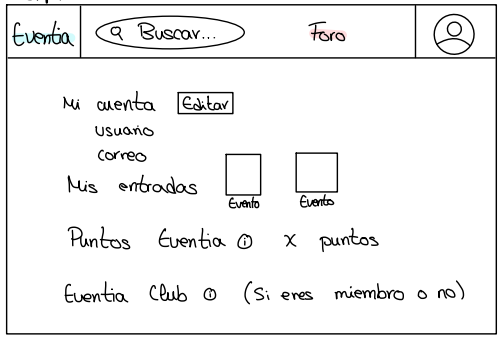Aquí aparecerá una pantalla similar a la del administrador, pero solo se mostrarán los eventos que gestionan.